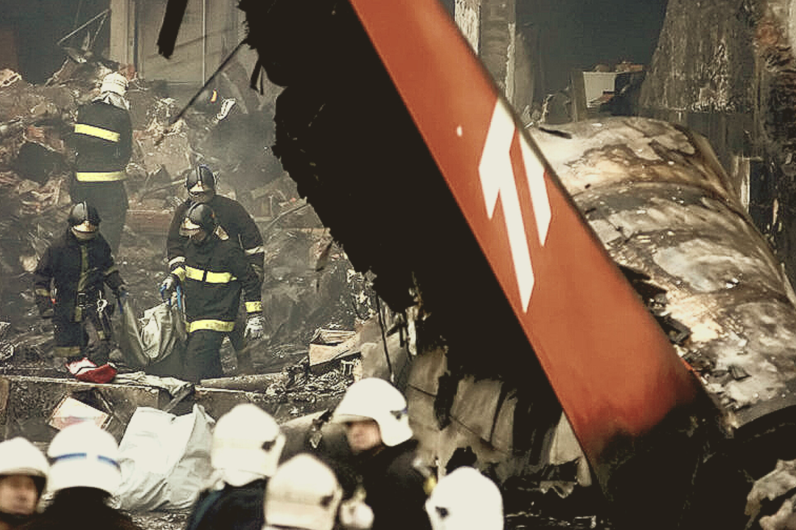
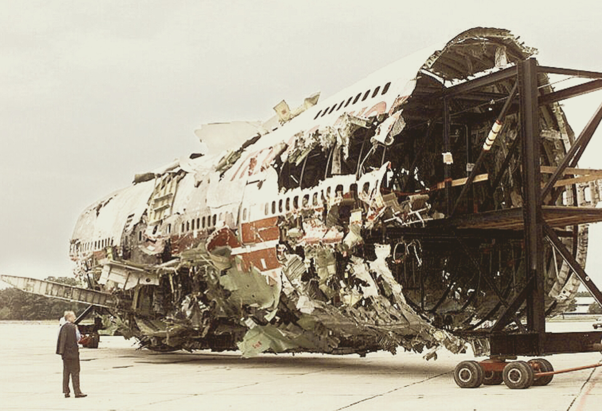
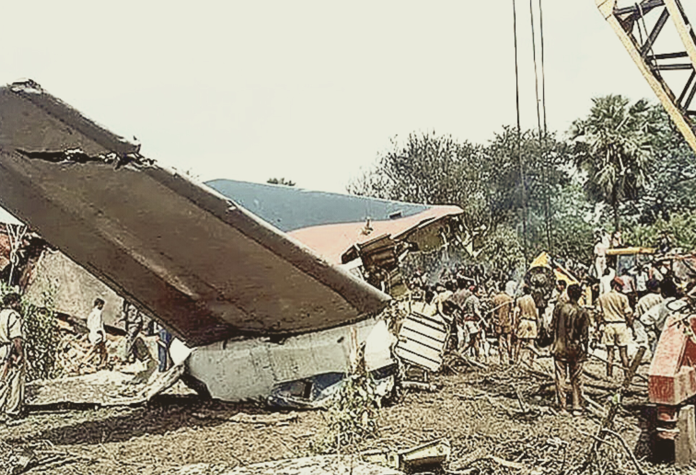
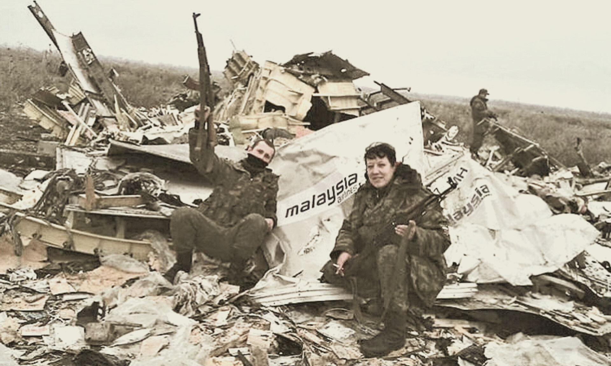

Com mais de 900 mortes, 17 de julho é uma das datas mais sombrias da aviação
Qui. 17 de Julho de 2025
A data de 17 de julho é uma das mais sombrias da aviação mundial. Desde 1945, pelo menos 16 acidentes aéreos significativos ocorreram nesse mesmo dia, resultando em um total de 902 mortes. Os casos mais graves foram os voos TWA 800 (1996), TAM 3054 (2007) e Malaysia Airlines MH17 (2014), que juntos somaram 727 vítimas fatais.

Na tarde de 17 de julho de 2007, um Airbus A320 da TAM decolou de Porto Alegre com 186 passageiros e 6 tripulantes. Ao pousar sob chuva intensa no Aeroporto de Congonhas, em São Paulo, a aeronave ultrapassou a pista, derrapou sobre a Avenida Washington Luís e colidiu contra um prédio da TAM Express. A explosão seguida de incêndio causou a morte de todas as 199 pessoas a bordo e de outras 12 no solo.
As investigações apontaram múltiplos fatores combinados como causas do acidente. O relatório do CENIPA identificou que um dos manetes de potência não estava em idle (marcha lenta), devido a uma antiga recomendação da fabricante para pousos com reversor de empuxo inoperante — o que era o caso naquele dia.
Com isso, um dos motores entrou em reverso e ajudou na frenagem, mas o outro gerou propulsão, impedindo a desaceleração completa da aeronave, sendo ainda mais prejudicada pela falta de aderência na pista. Com isso o jato A320 de matrícula PR-MBK atravessou a pista toda, fez uma curva no final da cabeceira, sobrevoou a Avenida Washington Luís e colidiu com o edifício da TAM Express.
O impacto resultou em 199 mortes, consolidando-se como o pior acidente aéreo brasileiro. Porém, outras tragédias com data idêntica marcam o 17 de julho na aviação mundial:
TWA 800 (1996, EUA)

Um Boeing 747-100 da Trans World Airlines (TWA) explodiu 12 minutos após decolar de Nova York rumo a Paris, caindo no Oceano Atlântico e matando seus 230 ocupantes. A causa foi atribuída à explosão de vapores de combustível no tanque central, provocada por um curto-circuito. O caso levou à criação de novas normas de segurança para sistemas de combustível.
Alliance Air 7412 (2000, Índia)

Um Boeing 737-200 caiu a 2 km do aeroporto de Patna, após entrar em estol durante uma arremetida mal executada. A tripulação aplicou manobras incorretas e fora do padrão. O acidente resultou em 60 mortos — 55 a bordo e 5 no solo.
MH17 (2014, Ucrânia)

Separatistas pró-Rússia nos destroços do Boeing 777 comemorarando a morte de 298 civis
Um Boeing 777 que voava de Amsterdã para Kuala Lumpur foi abatido por um míssil terra-ar Buk sobre o leste da Ucrânia, em área controlada por separatistas pró-Rússia. Todos os 298 ocupantes morreram. A investigação internacional concluiu que o sistema de mísseis havia sido fornecido pela Rússia. O caso gerou condenações globais e novas resoluções da ICAO e da ONU sobre segurança aérea em zonas de conflito.
Coincidência trágica do dia 17 de julho
#OTD The date of July 17 is a dark one for aviation safety. Since 1945, there have been at least 16 major occurrences on this day, with a total of 902 casualties. TWA 800, TAM 3054 and Malaysia Airlines MH17 were the deadliest, causing a total of 727 fatalities. pic.twitter.com/rnpYN4Yv6a
— Air Safety #OTD by Francisco Cunha (@OnDisasters) July 16, 2025
Embora não exista uma explicação racional para a recorrência, o fato de ao menos 16 acidentes aéreos relevantes terem ocorrido nesse mesmo dia desde 1945 intriga o setor. Famílias de vítimas e profissionais da aviação observam a data com pesar. Apesar de as causas de cada acidente serem distintas e independentes, o que une esses eventos é o alerta constante para a importância da segurança operacional — não importa o calendário.